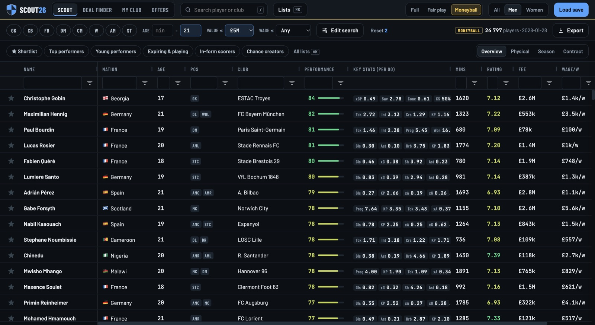

Every player in your save, finally searchable.
FM26 Scout opens your Football Manager 26 save in your browser. Filter it, value it, shortlist the players you want.
Free · No account · Your save stays on your computer

From download to shortlist in a few minutes
-
Download and open
Unzip the file and double-click FM26 Scout. Your browser opens on its own.
-
Pick your save
Your Football Manager 26 saves are listed. Click one and wait about a minute while it loads.
-
Start scouting
Search, compare, shortlist. Close the tab when you are done and the app closes with it.
Scout the way you like to play
Pick how much of the save you want to see. Switch at any time.
Everything in your save
All the data, including each player's current and potential ability. For when you want the complete picture.
Only what the game shows a manager
No hidden potential, no hidden attributes. Scout with the same information you would have in the game.
Only what happened on the pitch
Match statistics and nothing else, no attributes at all. Find the players who deliver, whatever their numbers say.
What you can do with it
- Search everything
- Every player in your save, men and women, from every nation. Combine filters and save the searches you use most.
- Spot a bargain
- Deal Finder compares a player's real fee and wage with an estimate of the fair price, so the good deals stand out.
- Know your squad
- My Club works out your formation from your recent matches, ranks your players position by position and suggests targets where you are thin.
- Check an offer first
- Get a verdict on a transfer offer and an estimate of the chance the club accepts it, before you send it.
- Keep your lists
- Shortlist the players you like and come back to them whenever you open the app.
The first launch asks for one extra click
FM26 Scout is not code-signed yet, so your computer asks you to confirm before opening it. You only do this once. The code is public on GitHub if you want to check what it does.
On Mac
- Double-click FM26 Scout. macOS says it can't open it.
- Open System Settings, then Privacy & Security.
- Scroll down and click Open Anyway, then confirm.
Works on Apple Silicon Macs only. Intel Macs are not supported.
On Windows
- Unzip the folder first. Do not run it from inside the zip.
- Double-click FM26-Scout.exe. If Windows protects your PC, click More info.
- Click Run anyway.